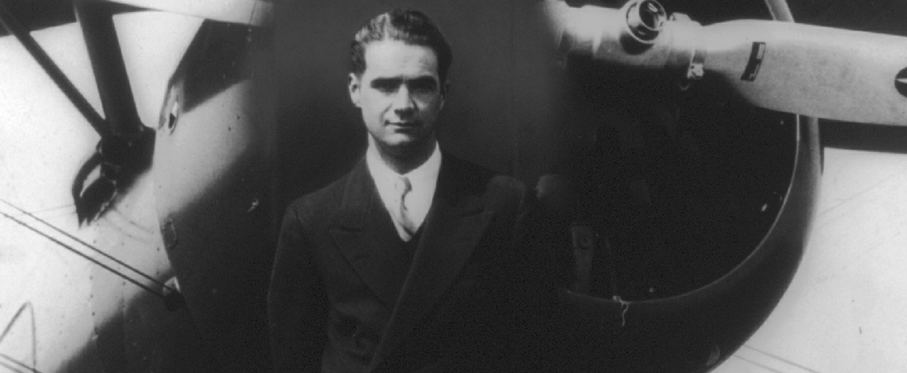

Howard Hughes standing in front of a Boeing 100.
Birth
Howard Hughes was born on December 24, 1905, in Humble, Texas.
Aviation
The Hercules' was a monumental undertaking. It is the largest aircraft ever built... I put the sweat of my life into this thing.
-Howard Hughes
One of the things he is known for is building planes. He also survived 4 plane crashes and he broke many flying records.
Film
He also produced many films such as:
- Hell's Angels
- Scarface
- The Outlaw
To learn more check out his IMDB page.
IMDBAwards
He recieved many awards.
- Congressional Gold Medal
- National Aviation Hall of Fame
- Harmon Trophy
- Collier Trophy
- Bibesco Cup
Death
He died of kidney failure on April 5, 1976, in Houston, Texas. He is buried at Glenwood Cemetery, in Houston, Texas.